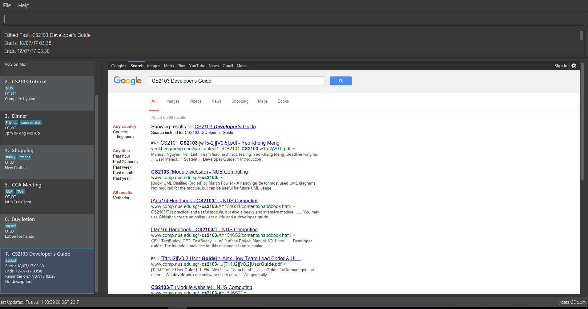

-
2Do is a To Do List desktop application. It has a GUI but most of the user interactions happen using a CLI (Command Line Interface).
-
It is designed to allow users to efficiently manage their tasks.
-
It is a Java application written in OOP fashion.
Acknowledgements
-
Some parts of 2Do were inspired by the excellent Java FX tutorial by Marco Jakob.
-
This project originated from the Address Book sample project created by SE-EDU.